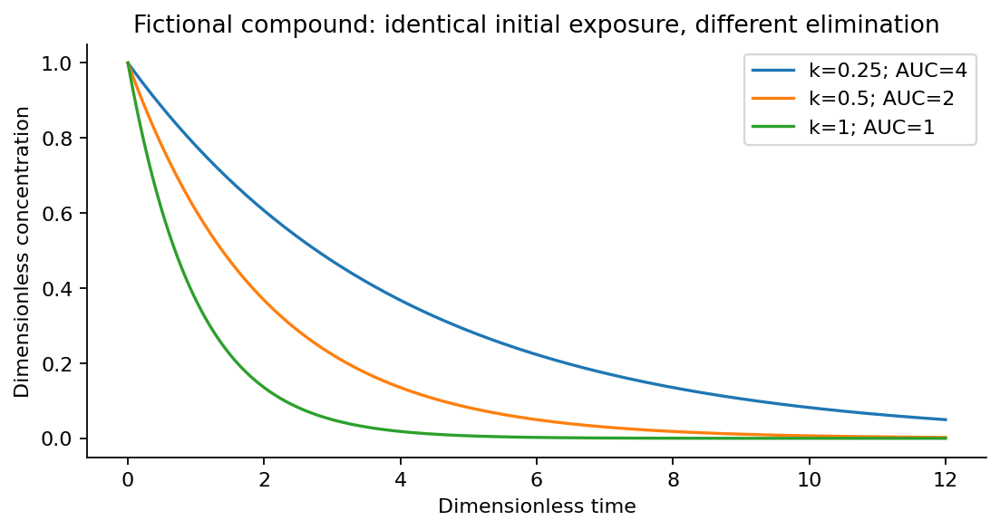
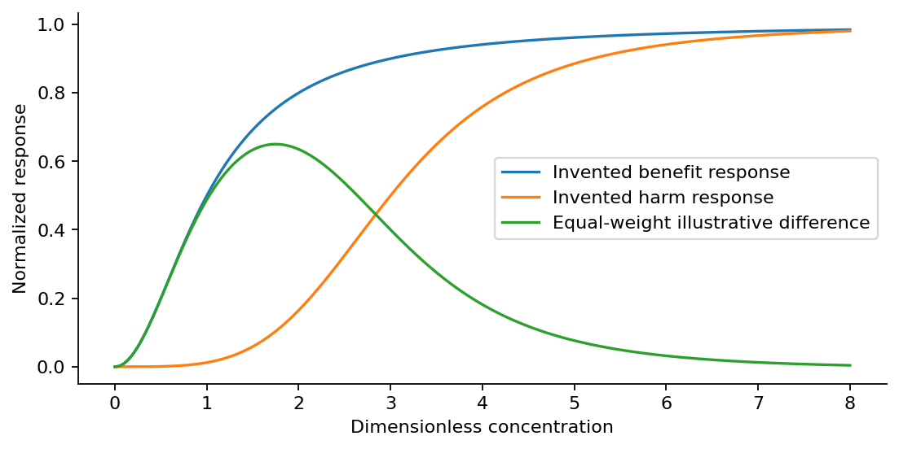

Drugs Are Good: An Allopath’s Journey Through Medicine, Healing, and Danger
Michael Emanuel Glover · Developed in dialogue with Codex · 4 October 2026
A first-person inquiry into medicine, evidence, exposure, benefit and danger. Numerical compounds and responses are fictional and dimensionless; no clinical treatment is recommended.
From the manuscript
I want medicine to succeed. I want suffering relieved, diseases treated and the ordinary pleasures of being alive returned to people whose days have become a struggle. Drugs are good when they do that work well. The title is a declaration of interest in healing, and the rest of the sentence matters: medicine, healing and danger belong in the same inquiry.

